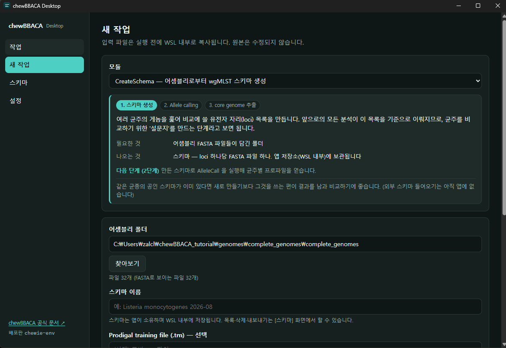
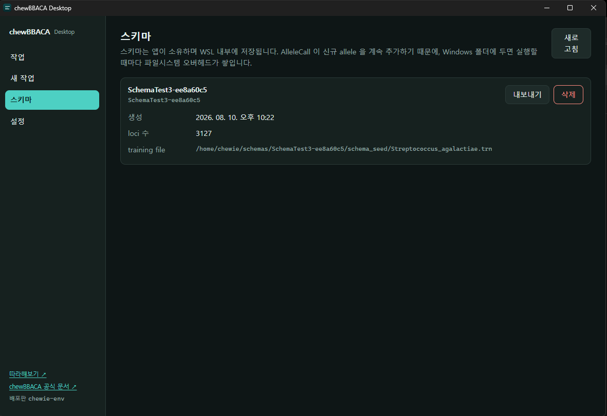
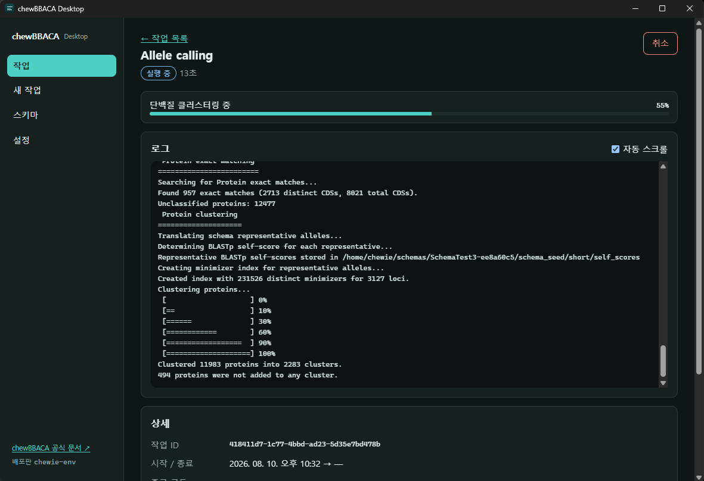

chewBBACA 개발팀이 만든 공개 예제(Streptococcus agalactiae 완성 게놈 32개)로 이 앱의 전 과정을 따라가 봅니다. 다운로드 18MB, 전체 소요 약 5분. 정답이 함께 들어 있어서 내 결과가 맞는지 확인할 수 있습니다.
Git이 있으면 복제하고, 없으면 GitHub에서 ZIP으로 받아 압축을 풀어도 됩니다.
git clone https://github.com/B-UMMI/chewBBACA_tutorial.git
cd chewBBACA_tutorial\genomes
tar -xf complete_genomes.zip압축을 풀면 이 폴더가 생기고, 안에 게놈 32개가 들어 있습니다. 뒤에서 계속 씁니다.
chewBBACA_tutorial\genomes\complete_genomes\Streptococcus_agalactiae.trn — 이 균종에 맞춘 Prodigal training file입니다.
1단계에서 넣으면 유전자 예측이 더 정확해집니다.
expected_results\ — 개발팀이 미리 돌려둔 정답입니다.
게놈 32개를 훑어 비교에 쓸 유전자 자리 목록을 만듭니다. 앞으로의 모든 분석이 이 목록을 기준으로 이뤄집니다.

| 칸 | 값 |
|---|---|
| 모듈 | CreateSchema |
| 어셈블리 폴더 | chewBBACA_tutorial\genomes\complete_genomes |
| 스키마 이름 | 아무거나 (예: Sagalactiae 튜토리얼) |
| Prodigal training file | chewBBACA_tutorial\Streptococcus_agalactiae.trn |
| 결과 폴더 | 비워두세요 — 스키마는 앱이 보관합니다 |
| CPU 개수 | 비워두세요 — 자동 |
약 30초 걸립니다. 끝나면 [스키마] 화면에 loci 3,127개로 등록됩니다.

각 균주가 스키마의 loci마다 어떤 allele을 갖는지 판정해 번호를 매깁니다. 이 표가 균주 비교의 실제 데이터입니다.
| 칸 | 값 |
|---|---|
| 모듈 | AlleleCall |
| 어셈블리 폴더 | 1단계와 같은 폴더 |
| 스키마 | 1단계에서 만든 것 |
| 결과 폴더 | 결과를 받을 폴더 (예: C:\chewie-results) |

약 1분 40초 걸립니다. 결과 폴더에 results_<날짜시각> 폴더가 생기고 그 안에 표들이 들어옵니다. 가장 중요한 것은 results_alleles.tsv입니다 — 균주 32행 × loci 3,127열.
2단계 표에는 빈칸이 많습니다. 3,127개 loci는 32개 게놈에서 발견된 유전자를 모두 합친 것이라 한 균주에만 있는 유전자가 섞여 있기 때문입니다. 균주끼리 공정하게 비교하려면 거의 모든 균주가 공통으로 가진 loci만 남겨야 합니다.
| 칸 | 값 |
|---|---|
| 모듈 | ExtractCgMLST |
| AlleleCall 결과 파일 | 2단계의 results_alleles.tsv |
| 존재 임계값 | 비워두세요 — 0.95 / 0.99 / 1 을 모두 계산합니다 |
| 결과 폴더 | 받을 폴더 |
results_alleles.tsv가 아닌 것을 고르면
앱이 “allelic profile 표가 아닙니다”라고 막아줍니다. 그 경고가 뜨면 파일을 다시 고르세요.
몇 초면 끝납니다. 임계값마다 프로파일 표와 loci 목록이 한 벌씩 나옵니다.
예제 저장소의 expected_results\와 비교합니다. 아래는 이 앱으로 실제 측정한 값입니다.
| 확인할 것 | 내 결과 | 예제 정답 |
|---|---|---|
| 1단계 스키마 loci | 3,127 | 3,128 |
| 3단계 cgMLST loci (0.95) | 1,270 | 1,267 |
| 2단계 EXC (기존 allele과 일치) | 41,555 | — |
| 2단계 INF (새로 발견) | 14,702 | — |
몇 개 차이는 정상입니다. 예제 정답은 chewBBACA 구버전으로 만들어졌고, 중간에 paralog(중복 유전자) 제거 단계를 한 번 더 거쳤기 때문입니다. 수십 단위로 벌어지지 않으면 제대로 돈 것입니다.
정상입니다. LNF는 “그 자리를 찾지 못함”이고, 위에서 설명한 이유로 wgMLST 표에는 원래 많습니다. 바로 그래서 3단계가 필요합니다.
3단계가 만든 cgMLSTschema95.txt를 AlleleCall의
[일부 loci 만 대상으로] 칸에 넣고 다시 실행하면, core genome만으로 된 최종
프로파일 표가 나옵니다. 실제 역학 비교에 쓰는 것이 이 표입니다.
| 증상 | 확인할 것 |
|---|---|
| 결과 폴더가 비어 있다 | CreateSchema라면 정상입니다. 스키마는 [스키마] 화면에 있습니다. |
| 스키마 목록이 비어 있다 | 1단계가 실패했을 수 있습니다. [작업] → 해당 작업 → 로그를 확인하세요. |
| 파일 선택이 막힌다 | 3단계는 results_alleles.tsv만 받습니다. |
| 네트워크 드라이브 오류 | 입력을 로컬 드라이브(C:)로 복사한 뒤 다시 시도하세요. |
| 실행이 아주 느리다 | 입력 폴더에 게놈이 아닌 파일이 섞이지 않았는지 보세요. |
> 로 시작하는 이름 줄과 서열 줄이 반복됩니다.
확장자는 .fasta·.fna·.fa 등을 씁니다.
Streptococcus_agalactiae.trn 이 들어 있습니다. 넣으면 예측이 정확해지고, 스키마 안에 함께 보관되어 이후 계속 같은 것이 쓰입니다.
2단계 결과의 results_statistics.tsv 에 나오는 값들입니다. 각 자리에서 판정이 어떻게 났는지를 뜻합니다.
LNF 가 많은 것은 고장이 아닙니다. wgMLST 설문지에는 일부 균주에만 있는 유전자가 섞여 있어 원래 빈칸이 많습니다. 그래서 3단계로 core 만 추립니다.